1 Aspectos físicos básicos de la transmisión de datos
Señales y señalización
Para que el lenguaje digital de los ordenadores pueda transmitirse entre ellos usando un medio de transmisión, los datos binarios deben convertirse en señales que puedan viajar por él:
Cables de cobre
Señales eléctricas.
Fibra óptica
Señales luminosas.
Aire
Señales electromagnéticas.
Señalización: proceso por el cual se convierten los datos de un emisor en señales que pueden viajar a través del medio.
En la fibra óptica, la señal luminosa se propaga de forma distinta según el tipo de fibra (monomodo, multimodo de índice escalonado o de índice gradual).
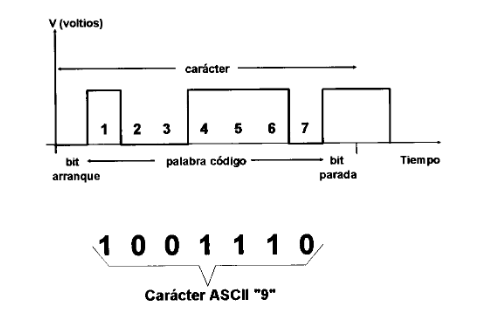
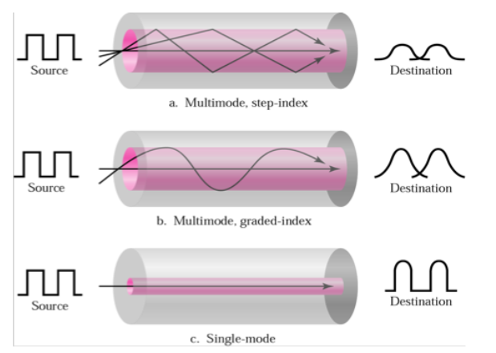
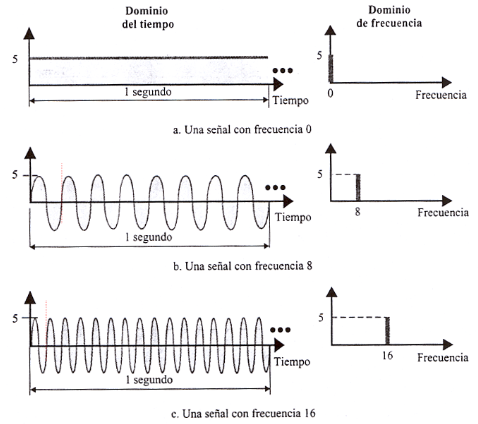
Limitaciones o perturbaciones en la transmisión
Atenuación
Disminución de la amplitud de la señal.
- Depende de la distancia recorrida y de la frecuencia.
- Se expresa en decibelios (dB). Los dB permiten reflejar números muy grandes y muy pequeños en un rango de valores menor.
- Como se pierde señal, siempre son valores negativos.
| Atenuación | La potencia… |
|---|---|
| −3 dB | se reduce a la mitad |
| −10 dB | se reduce a la décima parte |
| −20 dB | se reduce a la centésima parte |
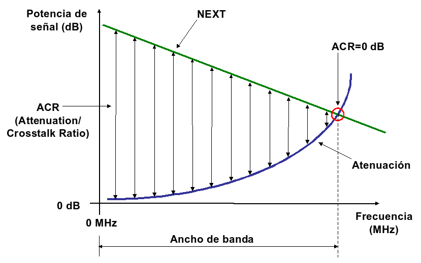
La fórmula que relaciona la potencia de entrada y de salida con la pérdida en dB es:
- −3 dB = 10 · log10(Pfinal / Pentrada)
- −3 / 10 = log10(Pfinal / Pentrada) (la inversa del logaritmo es la exponencial)
- 10−0,3 = Pfinal / Pentrada = 0,501187 → Pfinal ≈ Pentrada · 0,5
La potencia final es la mitad de lo que era: se ha perdido un 50 %.
Actividad: ¿qué cable pierde más potencia?
Si un cable tiene un nivel de atenuación de 13 dB para 100 metros y otro cable 25 dB para la misma distancia, ¿en cuál de los dos cables se pierde más potencia?
Ver solución
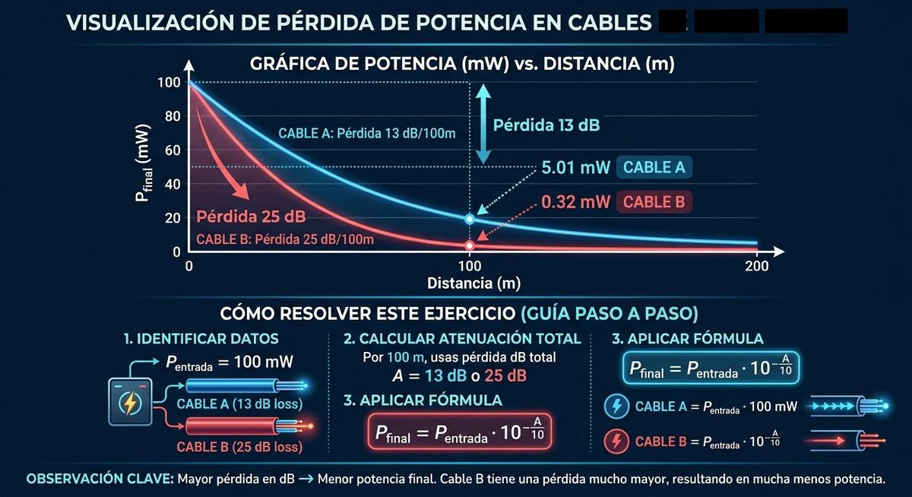
Interferencia electromagnética
Ondas electromagnéticas que interfieren en las generadas por los equipos emisores, distorsionando la señal a transmitir. Solo es aplicable a las comunicaciones basadas en señales electromagnéticas.
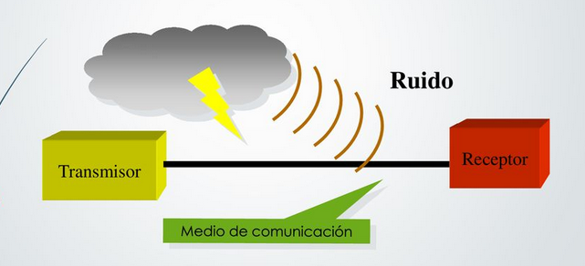
Actividad: hornos microondas y Wi-Fi
Investiga por qué los hornos microondas pueden interferir en las redes Wi-Fi.
Diafonía o crosstalk
Interferencia entre señales producida cuando los cables están muy juntos.
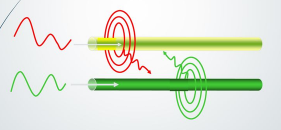
Dispersión
Variación gradual del ángulo de incidencia de un haz de luz (fibra) que provoca la pérdida de la señal luminosa. Cuando se inserta luz en una fibra, la onda de luz se ensancha. Si aumenta la longitud, las señales se pueden solapar demasiado y se producen errores.
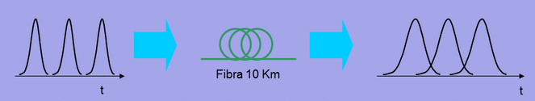
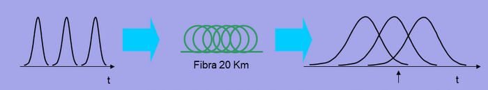
Más información sobre la transmisión por fibra óptica (Monografías.com)
Ancho de banda
- Espectro de frecuencias
- Conjunto de frecuencias que constituyen una determinada señal.
- Ancho de banda
- Rango de frecuencias que un medio de transmisión permite transportar.
- Se calcula como la diferencia entre las frecuencias máxima y mínima que se pueden transmitir.
- Se mide en hertzios (ciclos por segundo, unidad de frecuencia).
- Ancho de banda absoluto: anchura del espectro de frecuencias completo.
- Ancho de banda relativo: anchura del espectro donde se concentra la mayor parte de la energía.
Actividad: anchos de banda de la voz y la telefonía
La voz humana contiene frecuencias entre los 100 Hz y los 10.000 Hz. ¿Cuál es el ancho de banda de la voz humana?
La telefonía tiene asignada la banda de 300 Hz a 3,4 kHz. ¿Cuál es el ancho de banda de la telefonía?
Velocidad de transmisión
- Número de bits por segundo que pueden viajar por un medio de transmisión.
- Unidades: bps, kbps, Mbps, Gbps.
- Las señales digitales cuadradas son un tren de pulsos enviados a través de un medio usando señales senoidales.
- Cuantas más señales senoidales usamos, más precisión tiene el tren de pulsos enviado.
- La duración del pulso determina la velocidad a la que conmuta la onda de uno a cero: menor duración implica que se puede transmitir más rápido.
Cuanto mayor es el ancho de banda, mayor es la velocidad de transmisión que se puede alcanzar.
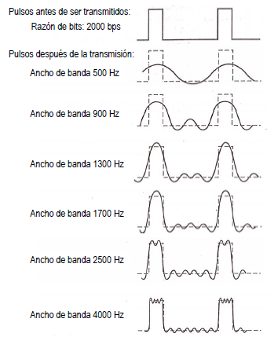
2 Medios de transmisión guiados
Cables de par trenzado
Formados por pares de cables de cobre trenzados para evitar interferencias entre ellos y recubiertos por plástico. Son sencillos de instalar y baratos.
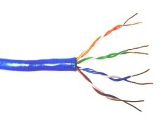

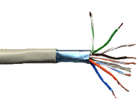
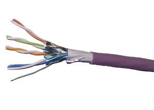
Tipos según el blindaje
U/UTP (antiguo UTP)
Par trenzado sin blindaje. No tiene ninguna protección metálica, ni exterior ni en los pares. Es el más económico, delgado y fácil de instalar; ideal para redes domésticas estándar.
F/UTP (antiguo FTP)
Par trenzado con blindaje global de lámina. Los pares internos no están protegidos individualmente, pero todo el conjunto exterior está envuelto en una lámina de aluminio para bloquear interferencias externas.
U/FTP (antiguo STP general)
Par trenzado con blindaje por par. No hay blindaje global exterior, pero cada par está envuelto en su propia lámina de aluminio. Es el estándar moderno más utilizado en redes de alta velocidad (como Cat6A) porque elimina muy bien la interferencia interna.
S/FTP o F/FTP (antiguo SFTP)
Par trenzado totalmente blindado. Doble protección: blindaje individual en cada par (lámina de aluminio) y blindaje global exterior (malla de cobre trenzada en el S/FTP o lámina en el F/FTP). Es más rígido y costoso; reservado para entornos industriales o categorías de alto rendimiento como Cat7 y Cat8.
Categorías y clases
- Categorías: surgen de la necesidad de los fabricantes de tener productos compatibles entre marcas.
- La EIA (Alianza de Industrias Electrónicas) y la TIA (Asociación de la Industria de Telecomunicaciones) desarrollaron estándares que establecen las categorías de par trenzado y determinan la calidad del cable, permitiendo seleccionar el adecuado para cada situación.
- En la actualidad existen diferentes categorías (de la 1 a la 10).
- Clases: el equivalente a las categorías pero de las normas ISO. Especifican las distancias máximas permitidas en un enlace (componentes pasivos: conectores, cable, rosetas, patch panel) y el ancho de banda permitido (en Hz). A mayor ancho de banda, el cable tiene más capacidad para enviar información al disponer de más frecuencias. Las clases son A, B, C, D, E y F.
Cada clase está diseñada para soportar ciertas tecnologías. Por ejemplo, la Clase A se pensó para telefonía básica, mientras que la Clase D se diseñó para redes locales de datos de alta velocidad (Fast Ethernet a 100 Mbps o incluso Gigabit Ethernet a 1000 Mbps en distancias cortas). Las clases más altas (como la F) exigen componentes con mejor blindaje y trenzado para resistir interferencias a frecuencias elevadas.
El ancho de banda de 100 MHz permite que las señales eléctricas oscilen hasta 100 millones de veces por segundo de extremo a extremo sin que la información se corrompa (los 1 y los 0 siguen siendo 1 y 0 cuando llegan al receptor). Con ese ancho de banda, los ingenieros han diseñado protocolos que permiten transmitir hasta 10 gigabits de datos por segundo.
| Clase → | Clase A | Clase B | Clase C | Clase D |
|---|---|---|---|---|
| Ancho de banda | 100 kHz | 1 MHz | 16 MHz | 100 MHz |
| Categoría 3 | 2 km | 500 m | 100 m | no existe |
| Categoría 4 | 3 km | 600 m | 150 m | no existe |
| Categoría 5 | 3 km | 700 m | 160 m | 100 m |
Actividades: categorías y clases
- Consultando la tabla anterior: ¿qué longitud máxima tendría un cable UTP de categoría 4 con un ancho de banda de 16 MHz? ¿De qué clase sería dicho cable?
- Investiga cuál es el alcance máximo y la velocidad máxima de un cable de categoría 6. ¿Y de categoría 7?
Conectores
Los conectores más usados en el cable de par trenzado son el RJ11 (telefonía, 6 hilos) y el RJ45 (8 hilos).
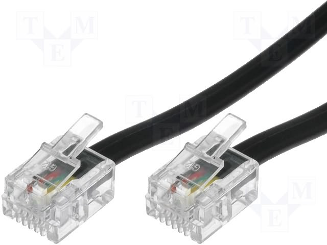
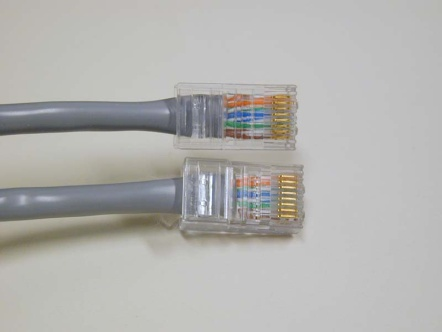
Cable coaxial
- Constituido por dos conductores: uno sólido en el centro y la malla u hoja exterior, que además sirve como blindaje frente al ruido. Entre ambos hay un material dieléctrico.
- El recubrimiento plástico externo lo aísla frente a contactos eléctricos y humedad, además de darle gran fortaleza.
- Permite transportar rangos de frecuencia más altos (mayor ancho de banda) que el par trenzado. Puede transportar hasta 100 canales de TV o miles de canales de voz y de datos de baja velocidad.
- Menor atenuación con la distancia.
- Conectores BNC.
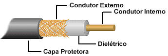
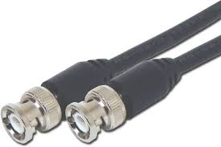
Fibra óptica
Soporte físico de plástico o cristal que permite el transporte de señales ópticas. Una cubierta protege la fibra de roturas ante golpes y la apantalla para evitar la influencia de otras fuentes luminosas.
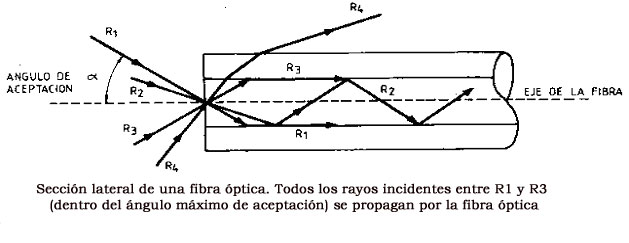
Ventajas
- No se ve afectada por campos electromagnéticos externos.
- Gran ancho de banda: velocidades de transmisión elevadas.
- Baja atenuación con la distancia.
Inconvenientes
- Elevado coste de la fibra y del equipamiento.
Tipos de fibra
Monomodo
- Solo se propaga un haz de luz.
- Grandes distancias (hasta 400 km).
- Utiliza un láser de alta intensidad.
- Elevadas tasas de información (decenas de Gbps).
- Núcleo muy estrecho (≈ 9 micrómetros).
- Sin rebotes en las paredes: no hay dispersión modal.
- OS1: instalaciones de interior y/o cortas distancias.
- OS2: tendidos exteriores y grandes distancias.
- Usos: WAN, MAN, CAN.
Multimodo
- Diferentes haces de luz se propagan por diferentes caminos.
- Una única fibra permite conducir varias conexiones.
- Distancias menores de 2 km por la dispersión modal.
- Simple y económico.
- OM1 y OM2: obsoletos en nuevas instalaciones.
- OM3: hasta 10GbE a 300 m y 100GbE a 100 m.
- OM4: cristal más puro; hasta 10GbE a 550 m y 100GbE a 150 m.
- OM5: admite 4 longitudes de onda (señales) por el mismo hilo (como los canales de Wi-Fi).
- Usos: LAN, racks, enlaces dentro de data centers.
Conectores de fibra
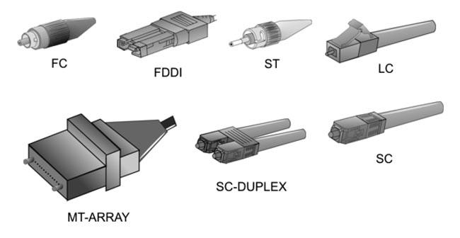
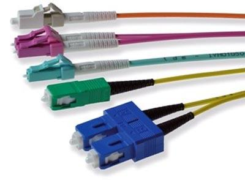
Actividades: conectores y usos de la fibra
- Investiga cuál es el conector habitual en las instalaciones de fibra óptica en las casas.
- Investiga otros usos de la fibra óptica.
Emisores del haz de luz
Dispositivos que convierten la señal eléctrica en luminosa.
Emisor LED
- Lentos: se usan en fibras multimodo.
- Fácil uso, durabilidad y económicos.
Emisor láser
- Muy rápidos: se usan en ambos tipos de fibra.
- Uso complicado, menor tiempo de vida y más caros.
Fibra óptica para clientes finales
Fibra y conectores
- Fibra: monomodo bajo la norma ITU-T G.657 o fibra insensible a la curvatura. A diferencia de la fibra monomodo estándar de exterior (G.652), admite radios de curvatura muy cerrados sin atenuaciones severas ni roturas, lo que permite guiar la fibra por las esquinas de las paredes, rodapiés o cajas de registro de las viviendas.
- Conector SC: en la roseta óptica o PTR y en la entrada del router.
- Conector LC: en instalaciones comerciales o con módulos SFP+ (transceptor de señal eléctrica a óptica para switches, routers y tarjetas de red).
Pulidos
SC/APC verde
En redes FTTH (Fiber to the Home) y GPON (Gigabit Passive Optical Network), las que usan los ISP para llevar la fibra a casa del cliente.
- Mínima reflexión hacia la central, evita interferencias.
- Necesita una alineación estricta. Incompatibilidad directa con UPC.
SC/UPC azul
Estándar en redes LAN y latiguillos de uso general.
- Menor pérdida de inserción.
- Mayor reflexión hacia la red central, por lo que no se usa en la red de los operadores.
Elementos de una LAN mixta
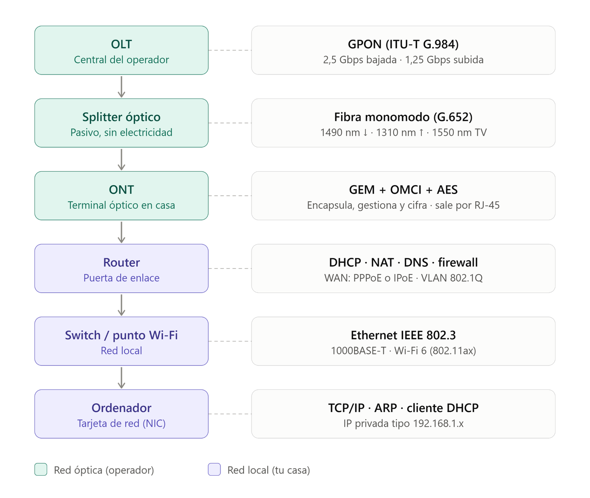
- OLT (central del operador). Extremo activo de la red GPON, definida en ITU-T G.984. Emite hacia los clientes a 2,5 Gbps de bajada y recibe a 1,25 Gbps de subida. En la bajada usa multiplexación por tiempo (TDM): la OLT emite todo el tráfico y cada ONT se queda con lo suyo. En la subida usa TDMA: la OLT asigna turnos de transmisión a cada ONT para que no se pisen.
- Fibra y splitter óptico. Una sola fibra monomodo (G.652) sirve a varios abonados, normalmente entre 32 y 64. Viaja en ambos sentidos con longitudes de onda distintas: 1490 nm de bajada, 1310 nm de subida y 1550 nm para TV por RF si el operador la usa. El splitter es pasivo: reparte la luz sin electricidad, y por eso se llama red PON (Passive Optical Network).
- ONT (terminal óptico en tu casa). Convierte la señal luminosa en eléctrica y entrega Ethernet por un puerto RJ-45. Dentro de la red GPON se utilizan tres elementos:
- GEM (GPON Encapsulation Method), que encapsula los datos.
- OMCI, que permite al operador gestionar la ONT en remoto.
- Cifrado AES en la bajada, porque todas las ONT del splitter reciben la misma señal.
- Router (puerta de enlace). Une la red del operador con tu red local:
- Lado WAN: obtiene su IP pública por PPPoE o IPoE (DHCP), dentro de la VLAN 802.1Q que exija el operador.
- Lado LAN: actúa como servidor DHCP (reparte IPs privadas), como DNS local o reenviador, como firewall y hace NAT para que todos tus equipos compartan la IP pública.
Muchos operadores integran ONT y router en un solo aparato, pero conceptualmente son dos etapas.
- Switch o punto Wi-Fi. Es la red local propiamente dicha. Por cable usa Ethernet IEEE 802.3 (1000BASE-T = 1 Gbps sobre cobre cat5e/6). Por aire, Wi-Fi 802.11ax (Wi-Fi 6) en 2,4 y 5 GHz. El switch reenvía tramas según la dirección MAC, sin mirar IPs.
- Ordenador. Su tarjeta de red recibe una IP privada por DHCP (por ejemplo 192.168.1.x), usa ARP para averiguar la MAC del router y envía todo lo que sale de la red local a esa puerta de enlace. Encima corre la pila TCP/IP con la que funcionan las aplicaciones.
Comparativa de medios guiados
Actividad: completa la tabla comparativa
Investiga y completa la siguiente tabla comparativa de medios de transmisión guiados.
| Medio de transmisión | Pros | Contras | Conectores |
|---|---|---|---|
| Par trenzado | |||
| Cable coaxial | |||
| Fibra óptica |
3 Medios de transmisión no guiados o inalámbricos
Un emisor radia energía electromagnética que se transmite por ondas electromagnéticas a través del aire hasta ser recibida por un receptor. Las ondas se transmiten de diferente manera en función de la frecuencia. Según la frecuencia utilizada se consideran 4 tecnologías:
Ondas de radio
Microondas
Infrarrojos
Láser
Tipos de transmisión y forma de propagación
Direccional
Toda la energía se concentra en un haz en una dirección concreta: emisor y receptor alineados, enlace punto a punto. Se usa con altas frecuencias (microondas o láser).
Omnidireccional
La energía se radia en todas las direcciones y puede llegar a varios receptores en distintas posiciones. Se usa con bajas frecuencias (radio).
| Frecuencia | Propagación |
|---|---|
| f < 2 MHz | Viajan por la superficie de la Tierra. |
| 2 MHz < f < 30 MHz | La onda rebota en la ionosfera → mayor distancia. |
| f > 30 MHz | Es necesaria visión directa entre emisor y receptor. |
Bandas de radiofrecuencia
| Banda | Rango | Propagación | Aplicación |
|---|---|---|---|
| VLF (Very Low Frequency) | 3–30 kHz | Tierra | Navegación radio de largo alcance |
| LF (Low Frequency) | 30–300 kHz | Tierra | Radiobalizas y localización de navegación |
| MF (Middle Frequency) | 300 kHz–3 MHz | Cielo | Radio AM |
| HF (High Frequency) | 3–30 MHz | Cielo | Banda ciudadana (CB), comunicaciones con aviones y barcos |
| VHF (Very High Frequency) | 30–300 MHz | Cielo y línea de vista | TV y radio VHF |
| UHF (Ultra High Frequency) | 300 MHz–3 GHz | Línea de vista | TV UHF, teléfonos móviles, mensajería y satélite |
| SHF (Super High Frequency) | 3–30 GHz | Línea de vista | Comunicación vía satélite |
| EHF (Extremely High Frequency) | 30–300 GHz | Línea de vista | Radar, satélite |
Ondas de radio, microondas, infrarrojos y láser
Ondas de radio
- Suelen estar entre 10 kHz y 1 GHz.
- Banda compartida con otras aplicaciones (TV, telefonía, radio, difusión…).
Microondas
- Entre 1 y 300 GHz.
- Unidireccionales: necesitan muy buena alineación.
- Si la distancia es muy grande, las antenas deben ser muy altas por la curvatura de la Tierra.
- No penetran las paredes.
Infrarrojos
- Entre 200 GHz y 400 THz.
- Para comunicaciones de corto alcance.
- Direccional.
Láser
- Similar al infrarrojo.
- Elevado coste.
Actividad: tecnologías inalámbricas
¿Qué tecnología inalámbrica usan las redes con el estándar IEEE 802.11? ¿Y el mando a distancia de la TV? Busca ejemplos de cada tecnología.